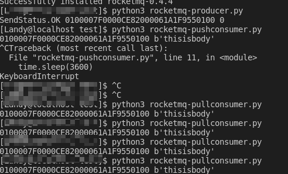

Preface
今天上午弄完和调通了etcd，下午开始追赶原先的计划，开始搭建 rocketmq 测试环境。
Contents
遵照 apache 在 github 上的 rocketmq docker 官方镜像 repo 一步一步走，基本上错不了。
大体上就两步：
- 生成 RocketMQ Docker 镜像
- 选择一种方式运行生成的镜像： 单节点，docker-compose集群，k8s集群
预备基础
- docker 版本 1.12+
- Kubernetes 版本 1.9+
步骤
下载源代码
第一步当然是下载当前repo到本地
1 | git clone https://github.com/apache/rocketmq-docker.git |
生成 docker 镜像
1 | cd rocketmq-docker/image-build |
RMQ-VERSION 在dist/rocketmq可以查看，我用的是 4.6.0
BASE-IMAGE 就是镜像的系统了， 可以是 centos 或者 alpine ，因为我要用在 docker 上，所以选择了 alpine
生成此版本相应的内容
1 | sh stage.sh RMQ-VERSION |
其实这里应该是要 RMQ-VERION+BASE-IMAGE 的，否则的话启动不了，需要手动去 docker-compose.yml 里面去加 BASE-IMAGE
运行
此时可以进入到 stages/4.6.0-alpine/templates 中以对应的方式运行此 docker 镜像了。
单节点
1 | ./play-docker.sh alpine |
集群
1 | ./play-docker-compose.sh |
k8s集群
1 | ./play-kubernetes.sh |
Dledger存储集群
这个是啥？需要 RMQ 版本4.4.0以上
1 | ./play-docker-dledger.sh |
TLS支持
启用 nameserver 和 broker 的SSL支持。具体信息要参考rocketmq-docker/ssl/README.md
1 | ./play-docker-tls.sh |
更新RocketMQ镜像
运行 image-build 下面的 update.sh 就可以了。
如何验证 RocketMQ 容器是否正确启动了呢
检查 Docker 和 docker-compose 就可以了。
- 运行 docker ps| grep rmqbroker 查看 RockerMQ broker 的容器id
- 运行 docker exec -it {container_id} ./mqadmin clusterList -n {nameserver-ip}:9876 验证 RocketMQ broker 是否正常工作
k8s的配置检查略过。
生产环境级别的配置
此容器也提供生产级别的配置，见后面的参考
测试
嗯，用 python 来得快
1 | pip install rocketmq |
敲完 pypi/rocketmq 中的 Producer, PushConsumer, PullConsumer 的代码之后，先跑 Producer 代码，然后跑 Consumer。

奇怪的是为啥一条消息可以重复消费呢，需要调查一下是设置问题还是程序问题。
NotImplementedError: rocketmq-python does not support Windows
rocketmq-pyton 不支持 Windows ，所以不要在 Windows 上面测了。
Problems
manifest for rocketmqinc/rocketmq:4.6.0 not found
这是一个官方的问题，官方在docker-compose.yml中的版本号后面需要加上 -alpine,也就是上面生成版本内容的部分
参考这个：rocketmq-docker/issuew/9